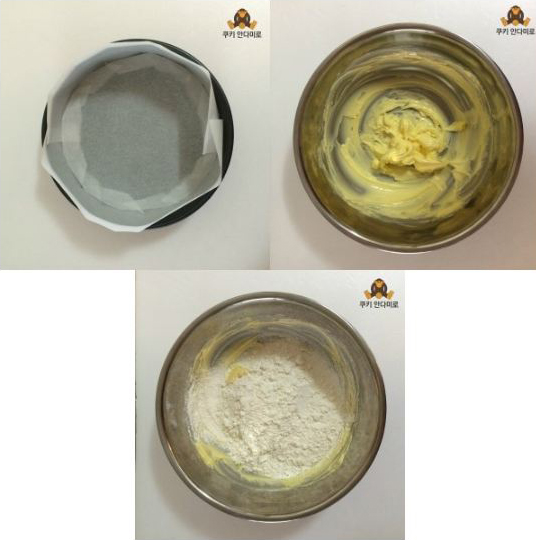
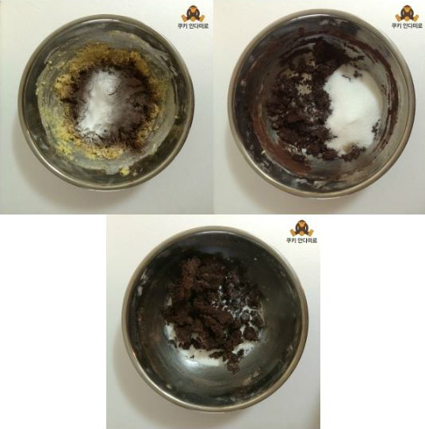
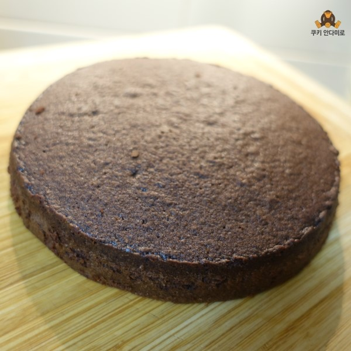
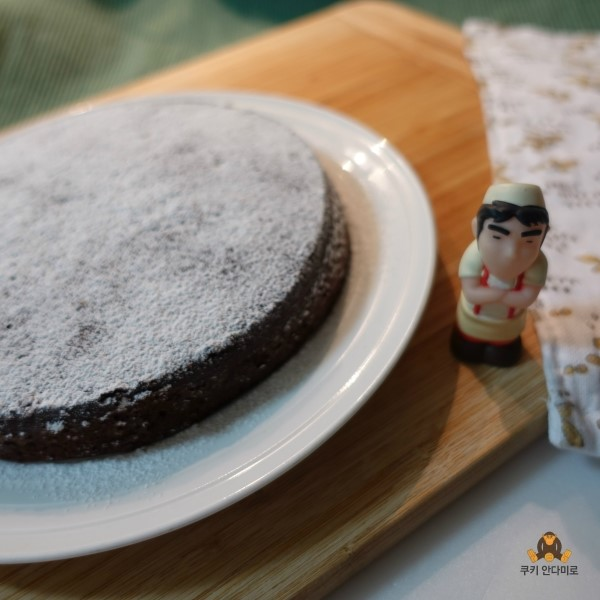
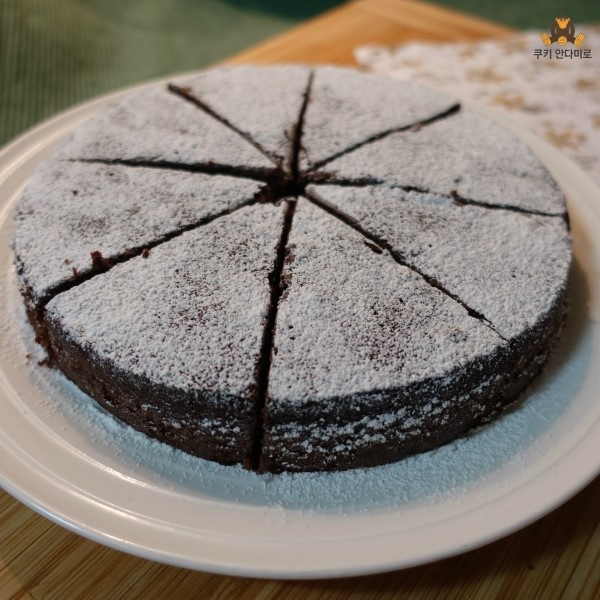
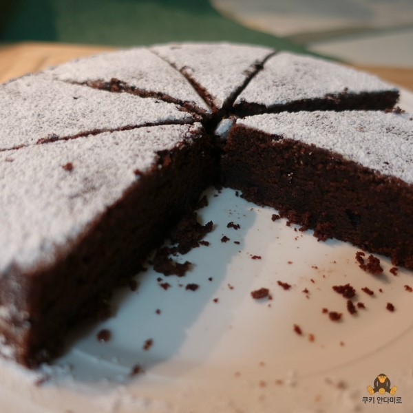

분량케이크 틀 1개 분량
(시험용에서 1/6분량)
재료박력분 100g
설탕 110g
버터 50g
달걀 55g
탈지분유
11.5g, 물 103.5g
>>대신에 우유 110g사용
코코아 20g
베이킹파우더 3g
유화제 3g >>생략
바닐라향 0.5g
소금 2g
만들기 전에... 달걀과 버터는 실온에 1시간 이상 놔둔 뒤 사용합니다.
DEVIL´S FOOD CAKE데블스 푸드케이크 만들기
시험용 분량의 1/6 분량으로 만들어봤어요.
데블스 푸드 케이크는 처음부터 끝까지 모두 기계 작업이지만,
1/6 분량이기에,, 손수 수작업을 해주었답니당.
모습은 마치 브라우니 같지만,
속이 몹시 촉촉하고 부드러운 것이.. 이름대로 정말 악마의 음식...

데블스 푸드 케이크는 처음부터 끝까지 모두 기계 작업이지만,
1/6 분량이기에,, 손수 수작업을 해주었답니당.
모습은 마치 브라우니 같지만,
속이 몹시 촉촉하고 부드러운 것이.. 이름대로 정말 악마의 음식...
우선 케이크틀에 유산지를 재단해서 준비해둡니다.
버터를 부드럽게 풀어주고, 체친 박력분을 넣고 빠르게 저어줍니다.

버터를 부드럽게 풀어주고, 체친 박력분을 넣고 빠르게 저어줍니다.
계란은 1개씩 넣으면서 잘 섞일 때까지 저어줍니다.
나머지 물 1/2를 넣고 재료가 다 섞이면 완성!!

나머지 물 1/2를 넣고 재료가 다 섞이면 완성!!
블랜딩 법은 참 특이하네요 ~~
버터 다음에 바로 박력분, 그리고 마지막에 달걀을 넣고 마무리~~
버터 다음에 바로 박력분, 그리고 마지막에 달걀을 넣고 마무리~~
준비해둔 케이크틀에 고르게 팬닝하고,
180도로 예열된 오븐에 40~50분 구워줍니다 :)

180도로 예열된 오븐에 40~50분 구워줍니다 :)
잘 구워진 데블스 푸드 케이크!!

요래 위에 분당, 슈가 파우더를 샤르르~ 뿌려주면 비주얼 폭발!!

네, 제가 한 번 먹어보겠습니다..
무척 맛이있군요!!! 후훗!!
이상 데블스 푸드 케이크 였습니다 :)

목록으로 가기
무척 맛이있군요!!! 후훗!!
이상 데블스 푸드 케이크 였습니다 :)